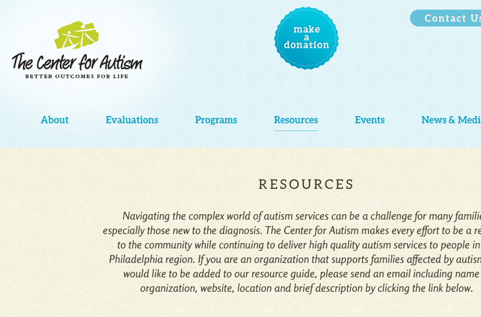
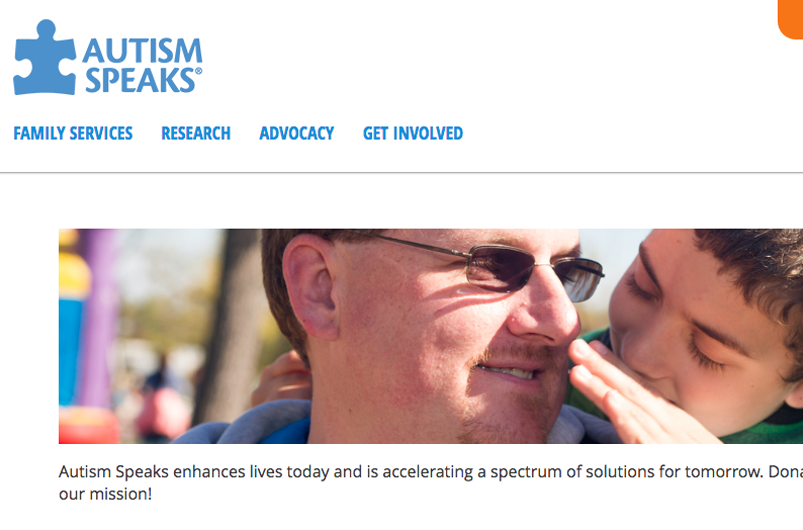
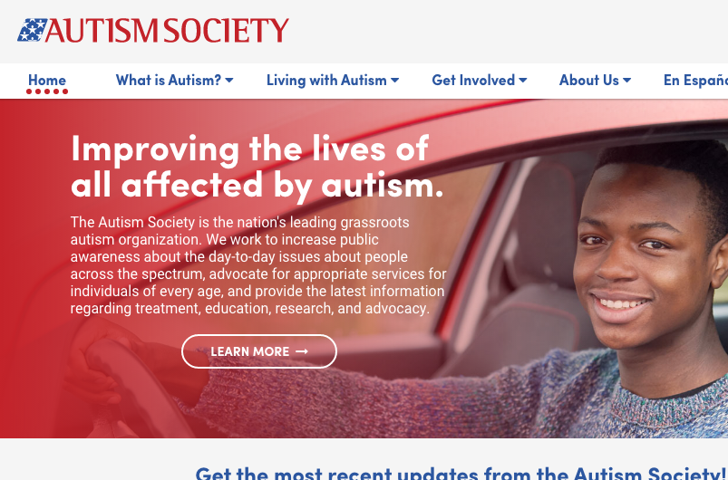
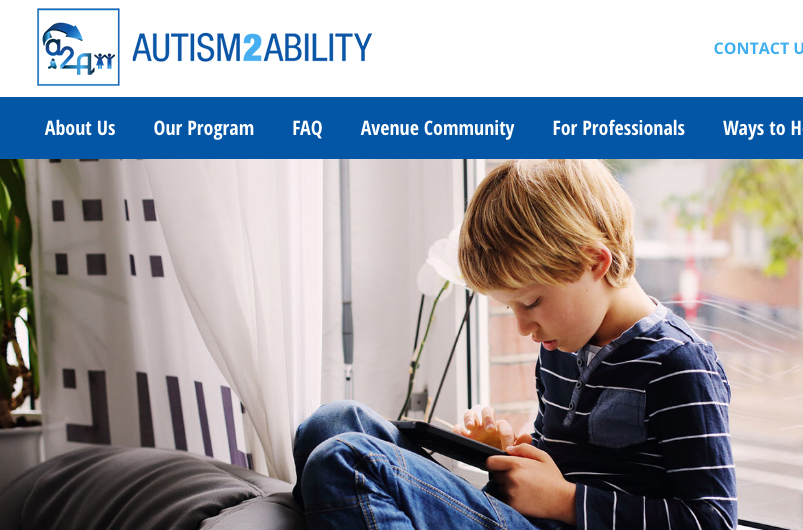

The Center for Autism
The Center for Autism is a non-profit organization that was founded in 1955 by renowned child psychiatrist Dr. Bertram A. Ruttenberg, and is the oldest autism treatment center in the country. As a leading provider of services in the Philadelphia region today, the Center knows that each person with autism is unique and tailors its programs to the needs of each person and family.

Autism Speaks
Autism Speaks is dedicated to promoting solutions, across the spectrum and throughout the lifespan, for the needs of individuals with autism and their families through advocacy and support; increasing understanding and acceptance of autism spectrum disorder; and advancing research into causes and better interventions for autism spectrum disorder and related conditions.
Autism Speaks enhances lives today and is accelerating a spectrum of solutions for tomorrow.

Autism Society
The Autism Society is the nation's leading grassroots autism organization. We work to increase public awareness about the day-to-day issues about people across the spectrum, advocate for appropriate services for individuals of every age, and provide the latest information regarding treatment, education, research, and advocacy.

Autism2Ability
Autism2Ability, a 501c3 organization, has developed a results-oriented, online learning and communication resource that provides a personalized curriculum for kids with autism spectrum disorder (ASD) and resources for their families and schools. We offer support and provide direction as you do your best to raise your kids in a world of changing rules and exhausting days.
We are mindful as you brace yourselves for the challenges, recognize the differences, celebrate the uniqueness, recognize the possibilities, and savor the wins that comprise the harmonious complexity of your families.